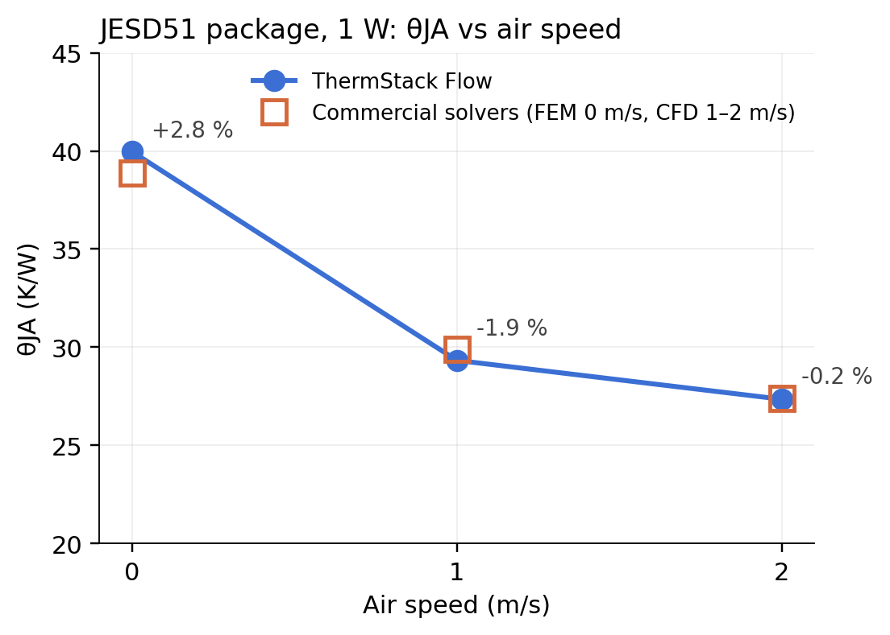

Air cooling with ThermStack-Flow: a JEDEC package in still air and in a wind tunnel
Air flow and heat solved together on the standard JEDEC test package, checked against commercial CFD and FEM solvers.
ThermStack-Flow solves the air flow and the heat in the solids together, so the cooling comes out of the simulation and is not an assumed heat-transfer coefficient. This paper applies it to the standard JEDEC test case: a 1 W die in a 15 mm package on a 2s2p test board, in the JESD51-2 still-air enclosure and in a JESD51-6 wind tunnel at 1 and 2 m/s. The junction-to-ambient resistance θJA is within 1.9 % of a commercial CFD solver in the wind tunnel and within 2.8 % of a commercial FEM solver in still air. After a 1 W power-on step, the die thermal impedance Zth(t) follows a commercial CFD transient within 3.2 % of the rise from 10 ms to 1,000 s.

The JEDEC package and its two air environments
One package, one board, two standard air environments, all from the JEDEC JESD51 family.
A 6 × 6 × 0.3 mm silicon die dissipates 1 W in a 15 mm package: a 1.2 mm mould cap over a 0.4 mm substrate and a 0.3 mm ball layer. The package sits at the centre of a 114.3 × 76.2 × 1.6 mm 2s2p test board (17.8 W/m·K in plane, 0.31 W/m·K through the board). In still air (JESD51-2) the board is held horizontally at mid height in a closed 305 mm cube with 300 K walls, and the air moves only by buoyancy. In the wind tunnel (JESD51-6) the same board faces a uniform 300 K stream along its long side. The air flow is laminar; radiation is not included.

How the air carries the heat away
In still air the package heats the air above it, which rises as a plume and draws cooler air in along the board from both sides. The air moves at most 0.25 m/s. In the tunnel the stream sweeps the warm air off the board and carries it downstream. At 1 m/s the die rise drops from 40.0 K to 29.3 K. Doubling the speed to 2 m/s removes only 2 K more: 88–89 % of the heat leaves the package through the board, so the board's own spreading and surface area set most of θJA.


Steady θJA within 3 % at every air speed
The same geometry, properties and boundary conditions were solved with a commercial CFD solver in the wind tunnel and with a commercial FEM solver with laminar natural convection in still air. θJA is the die peak rise per watt, so for this 1 W case its error in K/W is also the error in kelvin. In the tunnel, ThermStack-Flow on a 201.6 k-cell grid is within 0.56 K (1.9 %) at 1 m/s and 0.05 K (0.18 %) at 2 m/s of the commercial CFD solver on its finest, 545 k-cell mesh. The commercial solver's own mesh-converged estimate at 1 m/s, 29.1–29.6 K/W, brackets the ThermStack-Flow result. In still air ThermStack-Flow is within 2.8 % of the commercial FEM solver.

| Air | ThermStack-Flow | Commercial solver | Difference |
|---|---|---|---|
| Still air (JESD51-2) | 39.96 K/W (564 k cells) | 38.86 K/W (FEM, extrapolated) | +1.10 K (+2.8 %) |
| Wind tunnel, 1 m/s (JESD51-6) | 29.33 K/W (201.6 k cells) | 29.89 K/W (CFD, 545 k cells) | −0.56 K (−1.9 %) |
| Wind tunnel, 2 m/s (JESD51-6) | 27.35 K/W (201.6 k cells) | 27.40 K/W (CFD, 545 k cells) | −0.05 K (−0.18 %) |
Zth(t) from 1 ms to steady state, with the air flow evolving
At t = 0 the air is at rest and everything is at 300 K; then the die switches to 1 W. ThermStack-Flow solves the flow and the heat together through time, so the plume builds up as the package warms. The commercial CFD solver ran the same still-air case as a transient. ThermStack-Flow follows the reference Zth(t) within 0.16 K up to 1 s and within 3.2 % of the rise at all times from 10 ms to 1,000 s (largest at 24 s). The largest absolute difference is 0.69 K, near 30 s. That is the size of the grid difference: on the finer 564 k-cell grid the steady still-air rise moves by 0.65 K.

| Time after power-on | Commercial CFD, die rise | ThermStack-Flow, die rise | Difference |
|---|---|---|---|
| 0.1 s | 2.47 K | 2.45 K | −0.01 K (−0.5 %) |
| 1 s | 7.59 K | 7.75 K | +0.16 K (+2.1 %) |
| 10 s | 17.07 K | 17.41 K | +0.34 K (+2.0 %) |
| 100 s | 26.82 K | 27.38 K | +0.55 K (+2.1 %) |
| 1,000 s | 38.95 K | 39.39 K | +0.44 K (+1.1 %) |
Steady state unless stated; laminar air, constant air properties, no radiation; ambient and inlet air 300 K. θJA = (die peak − 300 K) / 1 W. Differences are ThermStack-Flow minus the commercial solver, in kelvin and in percent of the reference rise. The commercial FEM still-air value is its own extrapolation (38.86 ± 0.03 K/W). The commercial CFD transient was run to 1,000 s; its own steady state is 40.75 K/W, against 40.61 K/W for ThermStack-Flow on the transient grid.